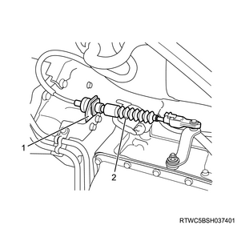

Transmission assembly removal (TB-50LS)
1. Battery ground cable disconnect
1. Disconnect the battery ground cable from the battery.
Caution
- Do not disconnect within 1 minute after turning OFF the ignition switch.
Note
- The following applies to 4WD.
Caution
- Before removing the transfer assembly from the vehicle, change the transfer mode to 2WD using the 2-4 switch.
2. Engine hood assembly removal
1. Open the engine hood.
Note
- Support the engine hood.
2. Remove the hinge bolt from the engine hood.
Note
- Before removing the hinge from the engine hood, put a marking of the hinge location for putting the hinge back in place.

3. Engine cover removal
1. Remove the engine cover from the engine.

- Engine cover
4. Wiper arm cover removal
1. Remove the wiper arm cover from the wiper arm.
5. Wiper arm removal
1. Remove the wiper arm from vehicle.
Note
- Remove the nut to remove the wiper arm and the blade.

- Wiper arm cover
- Nut
- Wiper arm, blade
6. Side cowl cover removal
1. Remove the side cowl cover from the body.

- Side cowl cover
7. Cowl cover removal
1. Disconnect the washer hose from the clip.
2. Remove the grommet from the cowl panel.
Note
- Push the grommet down inside the cowl panel.

- Grommet
- Washer hose
3. Remove the cowl cover from the cowl panel.
8. Wiper linkage disconnect
1. Disconnect the wiper linkage from vehicle.
Note
- Remove the bolt and nut from the wiper linkage.
- Remove the connector from the wiper motor.

- Nut
- Bolt
9. Cowl panel removal
1. Remove the cowl panel from vehicle.
Note
- Remove the 8 bolts.

10. Transmission assembly preparation
1. Raise vehicle using the jack.
Note
- Use a suitable stand to support the vehicle.
11. ATF drain
Note
- When the transmission is disassembled
1. Remove the drain plug from the oil pan.
Note
- Drain the ATF.
- Keep a record of the amount of fluid that is drained.
Caution
- If chips and particles are found on the oil cleaner magnet when examining it, damage on the gear is suspected.
- Examine the chips and particles on the oil cleaner magnet to determine what type of wear has occurred in the transmission.
2. Temporarily tighten the drain plug to the oil pan.
12. Rear propeller shaft assembly removal
13. Front propeller shaft assembly removal
Note
- The following applies to 4WD.
1. Remove the front propeller shaft assembly from vehicle.
Note
- Remove the exhaust and the transfer protector.
- Put alignment marks on the flanges on both the front and rear sides of the front propeller shaft.

Note
- Remove the bolt, nut and washer on the front axle side.
- Remove the bolt, nut and washer on the transfer side.
- Remove the front propeller shaft assembly.
14. Catalyst converter removal
15. Engine harness disconnect
1. Disconnect the engine harness from the harness connector.
- Turbine speed sensor connector
- Transmission internal harness connector
- Output speed sensor connector
- Inhibitor switch connector
Note
- The following applies to 4WD.
- 2-4 switch connector
- Neutral switch connector
- Actuator connector
Caution
- When disconnecting 2-4 switch connector while the battery is connected, do not turn the vehicle ignition switch to the ON position.
Note
- Disconnect the clips.
- 2WD
- With ABS
Note
- 2WD
- Without ABS

Note
- 4WD

16. Transfer assembly removal
1. Remove the transfer assembly from the transmission.
17. Starter motor removal
Refer to "1.Engine 1J.Electrical(4JK1) starter motor removal".
Refer to "1.Engine 1J.Electrical(4JJ1) starter motor removal".
18. ATF cooler pipe disconnect
1. Disconnect the ATF cooler pipe from the transmission.
Note
- Disconnect the flare nut and remove the 3 clips.
19. Automatic transmission control cable disconnect
1. Disconnect the automatic transmission control cable from the select lever.
2. Remove the auto mission control cable bracket from the transmission.

- Auto mission control cable bracket
- Automatic transmission control cable
20. Lower cover removal
1. Remove the lower cover from the transmission.
21. Flexible plate bolt removal
1. Remove the flexible plate bolt from the torque converter assembly.
Note
- Remove the 6 flexible plate bolts.
Caution
- Do not reuse the flexible plate bolt.
22. Transmission crossmember removal
1. Install the front engine hanger to the cylinder head.
2. Install the rear engine hanger to the cylinder head.
Refer to "1.Engine 1B.Mechanical(4JK1) engine mounting removal".
Refer to "1.Engine 1B.Mechanical(4JJ1) engine mounting removal".
3. Hold the transmission using the jack.
Note
- Support the transmission with a transmission jack.
4. Remove the brace from the frame and the transmission crossmember.
Note
- Remove the bolt from the braces.
5. Remove the nut from the transmission crossmember.
6. Remove the transmission crossmember from the frame.
Note
- Remove the nuts and bolts from the transmission crossmember.

23. Transmission assembly removal
1. Remove the transmission from the engine.
24. Cushion rubber removal
1. Remove the cushion rubber from the transmission.
Note
- The following applies to 2WD.
Note
- The following applies to 4WD.